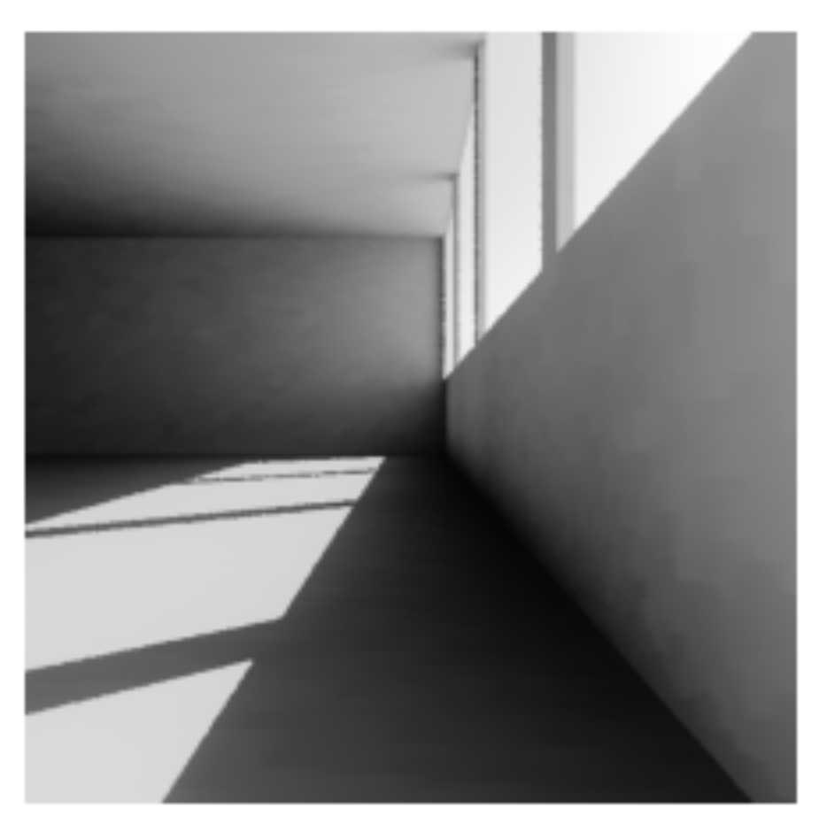

Quickstart
Importing pyradiance
After installing pyradiance, it can be imported as follows:
We use an aliaspr here to improve code readability.
Creating a scene
Here we are using RADIANCE files created beforehand to create a scene object used for rendering.
First, we instantiate a Scene object by giving it a name.
scene.add_material("Objects/materials.mat")
scene.add_surface("Objects/walls.rad")
scene.add_surface("Objects/ceiling.rad")
scene.add_surface("Objects/floor.rad")
Note
Scene object here is only used for render() function. Regular RADIANCE functions such as rpict(),
rtrace(), rcontrib()
currently doesn't take Scene as input. These 'raw' RADIANCE functions takes file paths as input instead, as they do in RADIANCE CLI.
Rendering a scene
A scene can be rendering using the render() function. The render() function has a few optional arguments.
RADIANCE, by default, uses zero ambient bounce, which we can overwrite by defining the ambbounce argument:
.hdr image as bytes.
Visualizing an image
We can visualize the image using popular computing and plotting library such as numpy and matplotlib.
Falscolor image
Falsecolor-ing an image is a common practice in quantitative analysis. An falsecolor image maps the full range of an HDR image into a color scale.
First, we convert our image into a numpy array. This is usually the first step before any analysis in Python, since most of the analysis and
visualization library recognize the numpy.ndarray object. We use pvalue() and
get_image_dimension() function for this step.
import numpy as np
xres, yres = pr.get_image_dimensions(image)
pixels = pr.pvalue(image, header=False, outform='f', resstr=False)
iar = np.frombuffer(pixels, dtype=np.single).reshape(xres, yres, 3)
Note
Notice the outform argument in the pvalue() function and dtype argument in the np.frombuffer() function need to match.
In this case, both are indicating the output and input data format to be single precision float.
We also need to remove header and resolution string from the pvalue output.
Now we have the image as numpy array, iar. The shape of this array is xres by yres by 3, where 3 represents the RGB channels.
We are, however, usually interested in radiance or luminance values for each pixel. To do that we can weight the RGB channels to get our luminance values.
This is trivial now with numpy array.
import matplotlib.pyplot as plt
# using a viridis color map
cmap = plt.cm.viridis
# setup a logrithm normalizer
norm = LogNorm()
plt.axis("off")
fimage = cmap(norm(luminance))
plt.colorbar(plt.cm.ScalarMappable(norm=norm, cmap=cmap), label=r"$\mathrm{cd/m^2}$")
Tonemapping
We can use pcond() function to apply more advanced tonemapping
techniques, e.g., applying a human vision adaption. pcond() function, however, takes a image file as input, so we
need to write our .hdr image into a file before we can call pcond().
tpix = pr.pvalue(timage, header=False, resstr=False, outform='f')
tiar = np.frombuffer(tpix, dtype=np.single).reshape(xres, yres, 3)
plt.imshow(tiar*(1.0/2.2))
Note
Notice we apply a 2.2 gamma correction here.
